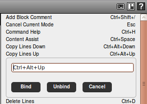

KDV |
Added a Keybinding UI
|
It is now possible to redefine
Scripted's keybindings via a simple UI. To access this UI open the
'Help panel' by clicking the question mark icon in the toolbar or
pressing 'F1'. Click any of the shortcut keys to change it. 
Any changes you make to the keybindings are saved in ${user.home}/.scriptedrc/keymap-${os.name}.json
There's no 'reset' button yet. To reset the keybindings to their default values you can simply delete the keymap file.
|
Enhancements to "Open File" Dialog
|
Here is a really long drawn out tedious and mundane description of foobar.

|
Enhancements to "Look in Files" Dialog
|
Here is a description of foobar.
|
Global Configuration via '.scritpedrc'
|
|
ADE |
| Added a foobar |
Here is a description of foobar.
|
ASC |
| Added a foobar |
Here is a description of foobar.
|